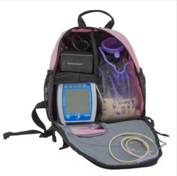

Portable ng tube feeding System
Contents |
Abstract
Owen, a three year-old child with Hydrocephalus, needs a portable feeding system that he can use when he is away from home.
Team Members
Problem Statement/overview of the need
Owen has a illness called Hydrocephalus, which is an incurable brain condition that affects his motor skills. He has a feeding tube, and he is being fed five times a day and each feeding takes approximately 45 minutes. He has been selected as a National Ambassador of Hydrocephalus Awareness and will be taking a trip to Washington D.C. in August, and his mother would like a more portable means of feeding while they are away from home.
Design Specifications
The portable feeding tube system will attach to a cross brace that is underneath the stroller. The stroller seat can be positioned so that the child faces the parent, or can be used facing away from them so the system needs to be work for both positions. It also has a tray attachment that can go over the child’s lap that we cannot interfere with. We will use the cross brace to hold the feeding tube system. The cross brace that we will use to hold the system is 19in. long (16in. are usable), and has a 20 degree bend in the center. The brace is 0.75 x 1.5in, and ovular. Underneath the cross brace, there is a canvas storage area that is 24 x 16.5in that is usable.
The system must be easy to remove/place on stroller and needs to be washable, just in case the food spills inside of it. The system should take up the least amount of space as possible, so that the mother will still have plenty of space to use for storage. Ultimately our goal to make the mother’s life easier, so ease of use and effectiveness are very important as well.
Background research

This is an example of a backpack used so that you can use the feeding system while carrying it in inside. The problem with this is that Owen does not walk yet, so a backpack would be a hassle while he is in his stroller. Plus, his mother needs to be able to get into bag easily to access his feeding pump.
The I.V. Pole attachment is another possibility, but it is awkward and we think it could get in the way. Also, it is possible that the child may try to pull on it and break it off.
Conceptual Design
Design Concept 1
- Hard outer shell
- Washable inner liner with hooks to hang bags
- Box will hang onto the cross brace
- Sliding lid to keep contents inside
Design Concept 2
- Pump system will attach to mounting plate with Velcro
- Feeding bag will attach to cross brace of stroller using command hooks
- Container has lid for pump to mount to
Design Concept 3
- 5 bar linkage for pump to attach to
- Uses bag that family already has
- Can be moved to different positions
Evaluate concepts/select candidate
| Design 1 | Design 2 | Design 3 | |
|---|---|---|---|
| Easy to clean | 5 | 4 | 5 |
| Lightweight | 3 | 5 | 5 |
| Can be disassembled/stored easily | 3 | 1 | 3 |
| Size/Packaging | 4 | 5 | 5 |
| Effectiveness | 5 | 3 | 1 |
| Durability | 5 | 1 | 2 |
| Total | 25 | 19 | 21 |
Detailed Design
Description of selected design
Our design consists of a rectangular container to hold the child’s bags of food inside. This container will be made of the Raptor Series PLA filament, which is dishwasher safe and FDA approved for holding food. One of the main reasons we chose this material is because it is washable, but will also be strong and durable enough for daily use. Even though his bags of food are sealed, we also wanted a material that was food safe. On the cross brace that runs underneath the stroller, there will be a bracket that will remain on the stroller. This bracket can be removed if needed, but is designed to remain on the cross brace. It will fit on the cross member and will have a v-shaped slot on the outward facing side. The container for the food bags will have a v-shaped edge on the inward facing side that will fit into the slot on the bracket. To ensure that the container does not fall off, both the bracket and the container will have magnets inside. The box will be easy to remove from the bracket, but also stays attached well enough that the mother will not have to worry about it falling off. The pump will slide into a bracket on the front of the food container that allow for the buttons on the pump to still be used when it is in place.
Analysis
Because this will be used day to day, we wanted to simulate typical incidents that could occur. We decided on a drop test, a static load test to simulate a compressive force, such as someone stepping on the food container, and a load test on the bracket with significantly more force than will be applied when used.
Our simulations were performed using ABS plastic. Solidworks does not have the option of using the type of PLA that we are going to use, but the filament we chose is stronger than the ABS we used in our simulations.
Analysis 1: Drop Test
The simulation below is a drop test from 5ft with impact on one edge. We wanted to make sure that the case could withstand being dropped on a hard surface and not crack or break.

Analysis 2: Static Loading on Face
The two simulations below are static loading of 100 pounds on the face of the container. On the left is the deformation, and on the right we have the stress.
Analysis 3: Static Loading on Bracket
This simulation is static loading on the bracket. We wanted to make sure that the bracket would not fail if excessive force was applied.
Initial Design
Above are photos of our initial design. We ran into a few problems with this design and decided that it was not what we wanted exactly. We also decided to make a bag to go with the box, so that the feeding system could also be used while being carried if the child was not in the stroller.
Final Design
Our final design takes all of the elements of our initial design and adds some special features that we decided worked better. Our final design has a box big enough to hold three bags of food, and a semi-circular cut out in the front right side of the box, instead of on the lid, for the feeding tubes to pass through. We changed this because the tube that connects to the food runs out of the left side of the pump, and we were concerned that because this tube is only 8’’ long that it would be difficult to fit inside the box properly. We finalized our design for the bracket on the front of the box that the pump will slide into and added some supports on the top side of it. The bracket for the box to attach to that fits onto the cross brace of the stroller is the same as in our initial design. As stated earlier, we decided to add a bag for the box to fit into. This bag will have pockets in which personal items such as the charger for the feeding pump and other belongings can be stored in. Once the parent or caregiver removes the feeding box from the stroller, they can place the entire feeding system in the bag. We hope that this will transform our project into something that can be used all the time instead of something that can only be used while the stroller is being used.
Bill of Materials
| Item | Web Address | Unit Price | Quantity | Subtotal | |
|---|---|---|---|---|---|
| Raptor Series Vivid Blue PLA Filament | Raptor PLA | $37.48 | 3 | $112.44 | |
| Magnets | Magnets | $1.74 | 4 | $6.97 | |
| Fabric for Pockets | Print Fabric | $0.88 | 2 | $1.76 | |
| Fabric for Bag | Solid Fabric | $3 | 4 | $12.00 | |
| Total | $133.17 |
- After taxes, total will be $144.32
Assembly Instructions
1. Place pump inside the bracket on the food container.
2. Place food bags inside and let the tubes from the pump slide into the slot on the front face of the container.
3. Place bracket on cross brace of stroller with the v-shaped slot of the bracket facing toward the rear of the stroller.
4. Remove the food and pump container from the bag in which it is stored in.
5. Carefully place the lip of the container onto the corresponding slot on the bracket on the stroller.
6. Place bag into the mesh container on the bottom of the stroller.
Fabrication Process
Since our project was completed 3D printed, other than the bag being sewn, our fabrication photos are mostly of the 3D printer. We included the photos of our failed prints and our initial measurements. We learned so much about 3D printing during this project!
Photos of Completed design
Instructions for safe use
1. Hand wash all components
2. Handle with care
3. Do not exceed 140 degree fahrenheit temperatures
4. Do not leave box in direct sunlight
5. Pull box from bracket at an angle
Project Summary, Reflection
Overall this project was so rewarding in many ways. We were all new to 3D printing, and that itself was a challenge and a learning experience. We got to work with an awesome family and therapist, who were both extremely patient and sweet. As a group, this project taught us that we can use the things we learned in school to help others and make a difference in someone's life. We hope that the child who received our product will be able to use it to make traveling easier and a better experience for him and his entire family.